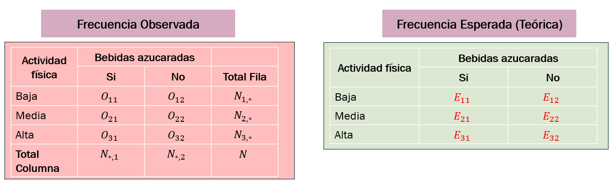

[1] 1.644854[XS-1130 Principios de Inferencia]
Las hipótesis son siempre una de estas tres:
\[H_0: \mu = \mu_0 \qquad\text{contra}\qquad H_1: \mu < \mu_0 \;\;\text{ó}\;\; H_1: \mu > \mu_0 \;\;\text{ó}\;\; H_1: \mu \neq \mu_0\]
y el estadístico tiene siempre la misma estructura:
\[\text{estadístico} = \frac{\bar x - \mu_0}{ee(\bar x)}\]
Lo único que cambia es cuál error estándar y cuál distribución de referencia corresponden. Es el mismo árbol de decisión que se usó para los intervalos de confianza.
Árbol de decisión
| Situación | Estadístico | Distribución |
|---|---|---|
| Población normal, \(\sigma\) conocida (cualquier \(n\)) | \(z_c = \dfrac{\bar x - \mu_0}{\sigma/\sqrt n}\) | \(N(0,1)\) |
| Población cualquiera, \(n > 30\), \(\sigma\) conocida | \(z_c = \dfrac{\bar x - \mu_0}{\sigma/\sqrt n}\) | \(N(0,1)\) |
| Población cualquiera, \(n > 30\), \(\sigma\) desconocida | \(z_c = \dfrac{\bar x - \mu_0}{s/\sqrt n}\) | \(N(0,1)\) |
| Población normal, \(n \le 30\), \(\sigma\) desconocida | \(t_c = \dfrac{\bar x - \mu_0}{s/\sqrt n}\) | \(t_{n-1}\) |
\[z_c = \frac{\bar x - \mu_0}{\sigma/\sqrt{n}}\]
Ejemplo 5. Una empresa productora de sopas afirma que el contenido promedio de sodio por porción es de 600 mg. Un grupo de tecnólogos en alimentos sospecha que es mayor. Se toma una muestra aleatoria de 64 porciones y se obtiene un promedio de 612 mg. Por estudios anteriores se sabe que \(\sigma = 32\) mg. Trabaje con \(\alpha = 0.05\).
Solución paso a paso.
Hipótesis: \(H_0: \mu = 600\) contra \(H_1: \mu > 600\), unilateral derecha
Error estándar: \(ee(\bar x) = \dfrac{\sigma}{\sqrt n} = \dfrac{32}{\sqrt{64}} = \dfrac{32}{8} = 4\)
Estadístico: \(z_c = \dfrac{612 - 600}{4} = \dfrac{12}{4} = 3.00\)
Valor crítico: \(z_{0.95} = 1.6449\). Como \(z_c = 3.00 > 1.6449\), el estadístico cae en la región de rechazo.
Valor p: \(p = P(Z \ge 3.00) = 0.00135\). Como \(0.00135 < 0.05\), se rechaza.
Intervalo: el intervalo unilateral inferior del 95% no contiene al valor de 600.
\[ [\bar{x}-z_{0.95}\cdot ee_{\bar{x}} \quad , \quad \infty) \quad = \quad [605.42 \quad,\quad \infty) \]
Conclusión
Con un nivel de significancia del 5% hay suficiente evidencia estadística para rechazar la hipótesis nula de que el contenido promedio de sodio es de 600 mg. Se concluye que el contenido promedio es mayor al declarado por la empresa.
xbar <- 612;
mu0 <- 600;
sigma <- 32;
n <- 64;
alpha <- 0.05
ee <- sigma/sqrt(n) # error estándar
zc <- (xbar - mu0)/ee # estadístico de prueba
z_critico <- qnorm(1 - alpha) # unilateral derecha
valor_p <- pnorm(zc, lower.tail = FALSE)
round(c(ee = ee, z_calculado = zc,
z_critico = z_critico, valor_p = valor_p), 5) ee z_calculado z_critico valor_p
4.00000 3.00000 1.64485 0.00135 [1] "Se rechaza H0"R no tiene una función para la prueba z con \(\sigma\) conocida: ese caso se programa a mano, como aquí.
Las función t.test cubre los casos en que \(\sigma\) es desconocida.
Para resolver ahora
Una planta embotelladora llena botellas cuyo contenido debe ser de 500 ml. Por calibración del equipo se sabe que la desviación estándar del proceso es de 8 ml. Una inspección toma una muestra aleatoria de 36 botellas y obtiene un contenido promedio de 497.2 ml. Se sospecha que la máquina está llenando de menos. Use \(\alpha = 0.05\).
Cuando la muestra es grande, \(s\) estima bien a \(\sigma\) y el TLC permite seguir usando la normal.
\[z_c = \frac{\bar x - \mu_0}{s/\sqrt{n}}\]
Ejemplo 6. La norma de atención de una clínica establece que el tiempo promedio de consulta es de 15 minutos. Una auditoría toma una muestra aleatoria de 50 consultas y encuentra un promedio de 14.2 minutos con una desviación estándar muestral de 3.5 minutos. ¿Hay evidencia de que el tiempo promedio sea menor al establecido? Use \(\alpha = 0.05\).
Hipótesis: \(H_0: \mu = 15\) contra \(H_1: \mu < 15\)
Error estándar: \(ee(\bar x) = \dfrac{s}{\sqrt n} = \dfrac{3.5}{\sqrt{50}} = \dfrac{3.5}{7.0711} = 0.4950\)
Estadístico: \(z_c = \dfrac{14.2 - 15}{0.4950} = \dfrac{-0.8}{0.4950} = -1.6162\)
Valor crítico: \(-z_{0.95} = -1.6449\). Como \(-1.6162 > -1.6449\), no cae en la región de rechazo.
Valor p: \(p = P(Z \le -1.6162) = 0.0530\)
Decisión: \(p = 0.0530 > 0.05\), no se rechaza \(H_0\).
ee z_calculado z_critico valor_p
0.494975 -1.616244 -1.644854 0.053021 Conclusión
Con un nivel de significancia del 5% no hay suficiente evidencia estadística para rechazar la hipótesis nula de que el tiempo promedio de consulta es de 15 minutos.
Importante
El valor p es 0.0530 y \(\alpha\) es 0.05: la decisión se decide por tres milésimas. Si se hubiera fijado \(\alpha = 0.10\) la conclusión habría sido la contraria.
Esto es exactamente por qué \(\alpha\) se fija antes de ver los datos, y por qué conviene reportar el valor p y no solo la palabra significativo. Un resultado así no es evidencia fuerte a favor de \(H_0\): es un resultado al borde.
\[t_c = \frac{\bar x - \mu_0}{s/\sqrt{n}} \qquad\text{con } gl = n-1\]
Requiere que la población sea aproximadamente normal.
Ejemplo 7. Un fabricante afirma que su pintura seca en 6 horas en promedio. Un laboratorio independiente sospecha que tarda más y mide el tiempo de secado, en horas, en 14 aplicaciones:
\[6.4,\; 5.9,\; 7.1,\; 6.8,\; 5.6,\; 6.9,\; 7.3,\; 6.2,\; 6.6,\; 7.0,\; 5.8,\; 6.7,\; 7.2,\; 6.5\]
De esa muestra se obtiene \(\bar x = 6.5714\) y \(s = 0.5355\). Trabaje con \(\alpha = 0.05\) y suponga normalidad.
Hipótesis: \(H_0: \mu = 6\) contra \(H_1: \mu > 6\)
Grados de libertad: \(gl = n - 1 = 13\)
Error estándar: \(ee(\bar x) = \dfrac{s}{\sqrt n} = \dfrac{0.5355}{\sqrt{14}} = \dfrac{0.5355}{3.7417} = 0.1431\)
Estadístico: \(t_c = \dfrac{6.5714 - 6}{0.1431} = \dfrac{0.5714}{0.1431} = 3.9923\)
Valor crítico: \(t_{0.95,\,13} = 1.7709\). Como \(3.9923 > 1.7709\), se rechaza.
Valor p: \(p = P(T_{13} \ge 3.9923) = 0.00077\)
secado <- c(6.4, 5.9, 7.1, 6.8, 5.6, 6.9, 7.3, 6.2,
6.6, 7.0, 5.8, 6.7, 7.2, 6.5)
mu0 <- 6;
alpha <- 0.05
n <- length(secado)
gl <- n - 1
ee <- sd(secado)/sqrt(n)
tc <- (mean(secado) - mu0)/ee
round(c(n = n, xbar = mean(secado), s = sd(secado), ee = ee,
t_calculado = tc, t_critico = qt(1 - alpha, gl),
valor_p = pt(tc, gl, lower.tail = FALSE)), 5) n xbar s ee t_calculado t_critico
14.00000 6.57143 0.53555 0.14313 3.99233 1.77093
valor_p
0.00077 Conclusión
Con un nivel de significancia del 5% hay suficiente evidencia estadística para rechazar la hipótesis nula de que la pintura seca en 6 horas. Se concluye que el tiempo promedio de secado es mayor al declarado.
One Sample t-test
data: secado
t = 3.9923, df = 13, p-value = 0.000767
alternative hypothesis: true mean is greater than 6
95 percent confidence interval:
6.317952 Inf
sample estimates:
mean of x
6.571429 La salida contiene exactamente los mismos números: t = 3.9923, df = 13, p-value = 0.000767. La función no hace nada distinto de lo que se hizo a mano.
Los argumentos que importan
x: el vector de datos. La función calcula \(\bar x\), \(s\) y \(n\).mu: el valor \(\mu_0\) de la hipótesis nula. Por omisión es 0.alternative: "two.sided" por omisión, o "less" o "greater".conf.level: el nivel del intervalo que reporta, 0.95 por omisión.Tres advertencias:
mu, R contrasta contra cero, que casi nunca es la hipótesis de interés.alternative lo es: con "greater" reporta \((\text{límite inferior},\;\infty)\).t.test siempre usa la distribución \(t\), incluso con \(n\) grande. Con \(n > 30\) la diferencia frente a \(z\) es despreciable.Para resolver ahora
Un fabricante afirma que sus baterías industriales duran en promedio al menos 20 horas. Un comprador toma una muestra aleatoria de 15 baterías y obtiene una duración promedio de 18.9 horas con una desviación estándar muestral de 2.4 horas. Se puede suponer normalidad. Use \(\alpha = 0.05\).
\[H_0: P = P_0 \qquad\text{contra}\qquad H_1: P < P_0 \;\;\text{ó}\;\; H_1: P > P_0 \;\;\text{ó}\;\; H_1: P \neq P_0\]
\[z_c = \frac{\hat p - P_0}{\sqrt{\dfrac{P_0(1-P_0)}{n}}} \quad \text{;Estadístico de Prueba}\]
Importante
En el denominador va \(P_0\), el valor de la hipótesis nula, y no \(\hat p\). Esta es la diferencia con el intervalo de confianza: el estadístico se calcula suponiendo que \(H_0\) es verdadera, así que el error estándar también se calcula bajo ese supuesto.
Condiciones de validez: \(nP_0 \ge 10\) y \(n(1-P_0) \ge 10\).
Un partido afirma que el 40% del electorado apoya una reforma. Una encuestadora entrevista a 400 personas seleccionadas al azar y 184 declaran apoyarla. ¿Difiere la proporción real de lo afirmado? Use \(\alpha = 0.05\).
Hipótesis: \(H_0: P = 0.40\) contra \(H_1: P \neq 0.40\), bilateral
Estimación puntual: \(\hat p = \dfrac{184}{400} = 0.46\)
Condiciones: \(nP_0 = 160 \ge 10\) y \(n(1-P_0) = 240 \ge 10\)
Error estándar: \(\sqrt{\dfrac{0.40 \times 0.60}{400}} = \sqrt{0.0006} = 0.024495\)
Estadístico: \(z_c = \dfrac{0.46 - 0.40}{0.024495} = \dfrac{0.06}{0.024495} = 2.4495\)
Valor crítico: \(\pm z_{0.975} = \pm 1.96\). Como \(2.4495 > 1.96\), se rechaza.
Valor p: \(p = 2\,P(Z \ge \, \mid2.4495\mid) = 2(0.00715) = 0.0143\)
Decisión: \(0.0143 < 0.05\), se rechaza \(H_0\).
Conclusión
Con un nivel de significancia del 5% hay suficiente evidencia estadística para rechazar la hipótesis nula de que el 40% del electorado apoya la reforma. La encuesta sugiere que el apoyo real es mayor.
p_hat np0 nq0 ee z_calculado z_critico
0.46000 160.00000 240.00000 0.02449 2.44949 1.95996
valor_p
0.01431
1-sample proportions test without continuity correction
data: 184 out of 400, null probability 0.4
X-squared = 6, df = 1, p-value = 0.01431
alternative hypothesis: true p is not equal to 0.4
95 percent confidence interval:
0.4117698 0.5089912
sample estimates:
p
0.46 El X-squared = 6 de la salida es exactamente \(z_c^2\), y el p-value = 0.0143 coincide con el calculado.
Si no se quiere depender de la aproximación normal, el número de éxitos sigue exactamente una binomial bajo \(H_0\):
z_a_mano prop_test_FALSE binom_test
0.014306 0.014306 0.016355 Importante
Con \(n\) grande los tres coinciden en lo sustantivo. Con \(n\) pequeño o \(P_0\) cerca de 0 o de 1 se separan, y ahí la exacta es la confiable. Lo importante es saber cuál está reportando R.
Para resolver ahora
Un proveedor afirma que a lo sumo el 5% de las piezas que entrega salen defectuosas. En una inspección de 300 piezas tomadas al azar se encontraron 22 defectuosas. Use \(\alpha = 0.05\).
prop.test(..., correct = FALSE) y verifique que el X-squared de la salida es el cuadrado de su estadístico.Hasta aquí el parámetro era un número. Ahora la pregunta es distinta: ¿están relacionadas dos variables categóricas?
\[H_0: \text{las dos variables son independientes}\] \[H_1: \text{las dos variables no son independientes}\]
La independencia, en términos de probabilidad
Dos variables son independientes si
\[P(A \cap B) = P(A)\,P(B)\]
para toda combinación de categorías. La prueba traduce esa igualdad a frecuencias: si las variables fueran independientes, se sabría cuántas observaciones deberían caer en cada casilla.
La nula es siempre la independencia, porque es la que permite calcular las frecuencias esperadas.

Tabla de Contingencia
Si las variables son independientes, la proporción de la columna \(j\) debería ser la misma en todas las filas. De ahí:
\[E_{ij} = N \times \frac{N_{i\cdot}}{N} \times \frac{N_{\cdot j}}{N} = \frac{N_{i\cdot} \times N_{\cdot j}}{N}\]
donde \(N_{i\cdot}\) es el total de la fila \(i\), \(N_{\cdot j}\) el total de la columna \(j\) y \(N\) el total general.
\[\chi^2_c = \sum_{i=1}^{f}\sum_{j=1}^{c} \frac{\left(O_{ij} - E_{ij}\right)^2}{E_{ij}} \qquad\text{con } gl = (f-1)(c-1)\]
Cada sumando mide cuánto se aparta una casilla de lo que se esperaba, en relación con lo que se esperaba.
Condiciones de validez: todas las \(E_{ij} \ge 5\).
Se clasificaron 400 personas según su nivel educativo y según si usan banca en línea.
| Nivel | Usa | No usa | Total |
|---|---|---|---|
| Primaria | 30 | 70 | 100 |
| Secundaria | 70 | 80 | 150 |
| Universitaria | 100 | 50 | 150 |
| Total | 200 | 200 | 400 |
\[E_{11} = \frac{100 \times 200}{400} = 50 \qquad E_{21} = \frac{150 \times 200}{400} = 75 \qquad E_{31} = \frac{150 \times 200}{400} = 75\]
| Nivel | \(O\) usa | \(O\) no usa | \(E\) usa | \(E\) no usa | |
|---|---|---|---|---|---|
| Primaria | 30 | 70 | 50 | 50 | |
| Secundaria | 70 | 80 | 75 | 75 | |
| Universitaria | 100 | 50 | 75 | 75 |
\[\chi^2_c = \frac{(30-50)^2}{50} + \frac{(70-50)^2}{50} + \frac{(70-75)^2}{75} + \frac{(80-75)^2}{75} + \frac{(100-75)^2}{75} + \frac{(50-75)^2}{75}\]
\[\chi^2_c = 8 + 8 + 0.3333 + 0.3333 + 8.3333 + 8.3333 = 33.3333\]
\[gl = (3-1)(2-1) = 2 \qquad \chi^2_{0.95,\,2} = 5.9915\]
Como \(33.3333 > 5.9915\), se rechaza \(H_0\). El valor p es menor a 0.0001.
Conclusión
Con un nivel de significancia del 5% hay suficiente evidencia estadística para rechazar la hipótesis nula de independencia. Se concluye que el nivel educativo y el uso de banca en línea están asociados: el uso aumenta de 30% en primaria a 46.7% en secundaria y 66.7% en universitaria.
Importante
La prueba dice que hay asociación, pero no dice de qué tipo ni en qué dirección.
Tampoco dice que una variable cause la otra. Asociación no es causalidad.
Banca
Nivel Usa No usa
Primaria 30 70
Secundaria 70 80
Universitaria 100 50 Banca
Nivel Usa No usa
Primaria 8.0000000 8.0000000
Secundaria 0.3333333 0.3333333
Universitaria 8.3333333 8.3333333 X2 gl critico valor_p
33.33333 2.00000 5.99146 0.00000 El cuadro de aportes identifica dónde está la asociación: las casillas de primaria y de universitaria aportan 8 y 8.33 cada una, mientras que secundaria aporta apenas 0.33.
Pearson's Chi-squared test
data: tabla
X-squared = 33.333, df = 2, p-value = 5.778e-08 Banca
Nivel Usa No usa
Primaria 50 50
Secundaria 75 75
Universitaria 75 75Los números coinciden con los calculados a mano: X-squared = 33.333, df = 2.
Lo que guarda el objeto
| Componente | Contenido |
|---|---|
$statistic |
el valor de \(\chi^2_c\) |
$parameter |
los grados de libertad |
$p.value |
el valor p |
$expected |
las frecuencias esperadas |
$observed |
la tabla original |
$residuals |
\((O-E)/\sqrt{E}\), el aporte con signo |
Importante
En una tabla de 2 filas y 2 columnas, chisq.test aplica por omisión la corrección de Yates, igual que prop.test:
\[\chi^2_{\text{Yates}} = \sum\sum \frac{\big(|O_{ij}-E_{ij}| - 0.5\big)^2}{E_{ij}}\]
En tablas más grandes no la aplica. Por eso el resultado a mano puede no coincidir con el de R justo en el caso 2×2, y no por un error de cálculo.
Para reproducir la fórmula de clase en una tabla 2×2 hay que escribir chisq.test(tabla, correct = FALSE).
R también avisa con un mensaje de advertencia cuando alguna frecuencia esperada es menor que 5. Ese aviso no debe ignorarse.
Para resolver ahora
Se clasificaron 300 estudiantes según su carrera y según si usan transporte público.
| Carrera | Usa | No usa | Total |
|---|---|---|---|
| A | 45 | 45 | 90 |
| B | 84 | 36 | 120 |
| C | 51 | 39 | 90 |
| Total | 180 | 120 | 300 |
chisq.test.| Parámetro | Situación | Estadístico | Distribución |
|---|---|---|---|
| \(\mu\) | Normal, \(\sigma\) conocida | \(\dfrac{\bar x - \mu_0}{\sigma/\sqrt n}\) | \(N(0,1)\) |
| \(\mu\) | \(n>30\), \(\sigma\) desconocida | \(\dfrac{\bar x - \mu_0}{s/\sqrt n}\) | \(N(0,1)\) |
| \(\mu\) | Normal, \(n\le 30\), \(\sigma\) desconocida | \(\dfrac{\bar x - \mu_0}{s/\sqrt n}\) | \(t_{n-1}\) |
| \(P\) | \(nP_0 \ge 10\) y \(n(1-P_0) \ge 10\) | \(\dfrac{\hat p - P_0}{\sqrt{P_0(1-P_0)/n}}\) | \(N(0,1)\) |
| \(\mu_D\) | Muestras pareadas | \(\dfrac{\bar d - 0}{s_d/\sqrt n}\) | \(t_{n-1}\) |
| Independencia | Todas las \(E_{ij}\ge 5\) | \(\sum\sum \dfrac{(O-E)^2}{E}\) | \(\chi^2_{(f-1)(c-1)}\) |
Siga este orden
¿Qué tipo de variable es? Cuantitativa lleva a medias; cualitativa con dos categorías lleva a proporciones; dos cualitativas cruzadas llevan a una tabla de contingencia.
¿Cuál es el valor de referencia y de dónde sale? Nunca de la muestra.
¿Qué se quiere demostrar? Eso define \(H_1\) y por lo tanto si el contraste es unilateral o bilateral.
¿Se conoce \(\sigma\)? ¿Es \(n\) mayor o menor que 30? ¿La población es normal?
¿Se cumplen las condiciones de validez?
¿Cuál es el nivel de significancia pedido?
| Función | Uso | Advertencia |
|---|---|---|
qnorm, pnorm |
valor crítico y valor p con \(z\) | la prueba z se programa a mano |
qt, pt |
valor crítico y valor p con \(t\) | |
qchisq, pchisq |
valor crítico y valor p con \(\chi^2\) | siempre cola derecha |
t.test(x, mu=) |
media, \(\sigma\) desconocida | sin mu contrasta contra 0 |
t.test(x, y, paired=TRUE) |
muestras pareadas | equivale a t.test(x-y) |
prop.test(x, n, p=) |
proporción | por omisión aplica Yates |
binom.test(x, n, p=) |
proporción, exacta | sin aproximación normal |
chisq.test(tabla) |
independencia | aplica Yates en el caso 2×2 |
Escribir el valor muestral en \(H_0\). El valor de referencia viene de una norma, una afirmación previa o un estudio anterior.
Escoger \(\alpha\) después de ver el valor p.
Decir se acepta \(H_0\). No rechazar no es probar.
Confundir el valor p con la probabilidad de que \(H_0\) sea verdadera.
Usar \(\hat p\) en el denominador del estadístico de la proporción. Ahí va \(P_0\).
Confundir significancia estadística con importancia práctica.
Decidir el tipo de contraste, unilateral o bilateral, después de mirar hacia dónde salió la muestra.
Usar chisq.test en una tabla 2×2 sin notar la corrección de Yates, o ignorar el aviso de frecuencias esperadas pequeñas.
Alcance
Esta primera lista cubre únicamente los tres contrastes que entran al examen:
Antes de calcular, decida qué parámetro está en juego, qué afirma quien investiga, si el contraste es unilateral o bilateral, y si se cumplen las condiciones de validez. En todos los casos escriba las hipótesis, el estadístico, la decisión por los dos criterios y la conclusión en términos del problema.
clinica.csv — 200 pacientes
Clínica con dos sedes. La norma interna fija un tiempo de espera promedio de 30 minutos y una meta de satisfacción del 70%.
| Variable | Descripción |
|---|---|
paciente |
identificador |
sede |
Central u Occidente |
edad |
edad en años |
tiempo |
minutos de espera |
seguro |
CCSS, Privado o Mixto |
satisfecho |
Si o No, encuesta de salida |
cultivo.csv — 160 parcelas
Ensayo agrícola con dos variedades sembradas en tres regiones. La variedad tradicional rinde 42 kg por parcela.
| Variable | Descripción |
|---|---|
parcela |
identificador |
variedad |
A, la nueva, o B, la tradicional |
region |
Norte, Centro o Sur |
rendimiento |
kg cosechados en la parcela |
plaga |
Si o No, presencia de la plaga |
Trabaje con clinica.csv. Use \(\alpha = 0.05\).
tiempo: tamaño, media, desviación estándar y un histograma.mean, sd, sqrt, qt y pt. Reporte el estadístico, los grados de libertad, el valor crítico y el valor p.Trabaje con clinica.csv, ahora con las variables cualitativas. Use \(\alpha = 0.05\).
satisfecho y calcule la proporción de pacientes satisfechos.X-squared es el cuadrado de su estadístico.seguro por satisfecho con table. Plantee las hipótesis de independencia.outer y verifique las condiciones de validez.Trabaje con cultivo.csv. Use \(\alpha = 0.05\) salvo que se indique otra cosa.
rendimiento.region por plaga. Plantee las hipótesis de independencia y calcule las frecuencias esperadas.variedad por plaga, que es de 2×2. Corra la función de R con la opción por omisión y con correct = FALSE. Explique a qué se debe la diferencia entre los dos resultados y cuál reproduce la fórmula vista en clase.Una cooperativa cafetalera garantiza que el contenido de humedad promedio de sus lotes es de 11.5%. El equipo de medición está calibrado y se sabe que la desviación estándar del proceso es de 0.8 puntos porcentuales. Un comprador analiza 49 lotes seleccionados al azar y obtiene un promedio de 11.78%. El comprador quiere saber si el contenido promedio difiere de lo garantizado. Use \(\alpha = 0.05\) y resuelva a mano.
Un taller de reparación afirma que el tiempo promedio de atención de un servicio básico es de 45 minutos. Un cliente frecuente sospecha que tarda más y registra 12 visitas seleccionadas al azar, obteniendo un promedio de 49.5 minutos con una desviación estándar muestral de 6.0 minutos. Se puede suponer normalidad. Use \(\alpha = 0.05\) y resuelva a mano.
Una municipalidad reporta que el 25% de los hogares del cantón separa sus residuos. Una organización ambiental entrevista a 240 hogares seleccionados al azar y encuentra que 78 lo hacen. La organización quiere saber si la cifra real difiere de la reportada. Use \(\alpha = 0.05\) y resuelva a mano.
X-squared es el cuadrado de su estadístico.Una planta registró durante un mes los artículos producidos por turno y si salieron defectuosos.
| Turno | Defectuoso | No defectuoso | Total |
|---|---|---|---|
| Mañana | 30 | 170 | 200 |
| Tarde | 32 | 128 | 160 |
| Noche | 38 | 102 | 140 |
| Total | 100 | 400 | 500 |
Use \(\alpha = 0.05\) y resuelva a mano.
Para cada situación indique el parámetro de interés, escriba \(H_0\) y \(H_1\), diga cuál prueba corresponde y si el contraste es unilateral o bilateral, y anote cuáles condiciones de validez habría que verificar. No haga ningún cálculo.
Marque con equis la única opción correcta en cada caso.
chisq.test sobre una tabla 2×2, con la opción por omisión:t.test(x) sin el argumento mu, R contrasta:Indique si cada afirmación es falsa o verdadera y justifique su respuesta en una línea.
t.test usa la distribución \(t\) aun cuando el tamaño de muestra es grande.prop.test es el cuadrado del estadístico \(z\) cuando se desactiva la corrección de continuidad.chisq.test aplica la corrección de Yates en cualquier tabla.Cada una de las siguientes frases apareció en un informe. Todas tienen al menos un error. Identifique el error y reescriba la frase de forma correcta.
Primera parte. Complete cada enunciado con el concepto que corresponde.
chisq.test aplica la corrección de _____ únicamente cuando la tabla es de tamaño _____.Segunda parte. Responda de forma breve.
chisq.test da un resultado distinto del cálculo a mano justo en las tablas 2×2, y qué habría que escribir para que coincidan?Qué se va a hacer aquí
En clase se definió la potencia como la probabilidad de rechazar \(H_0\) cuando es falsa, pero no se calculó. R trae una función que la calcula y que también resuelve el problema inverso: cuántas observaciones hacen falta para alcanzar la potencia que se desea.
Este apartado va paso a paso. En cada uno hay algo que usted debe deducir antes de seguir.
En toda prueba \(t\) hay cinco cantidades conectadas entre sí:
| Argumento | Qué es |
|---|---|
n |
el tamaño de muestra, por grupo si son dos grupos |
delta |
la diferencia que se quiere detectar, en las unidades del problema |
sd |
la desviación estándar de la población |
sig.level |
el nivel de significancia \(\alpha\) |
power |
la potencia \(1-\beta\) |
Importante
La regla de uso es una sola: se escriben cuatro y se deja la quinta sin escribir, o en NULL. R calcula la que falta.
delta aumenta y todo lo demás queda igual, ¿la potencia sube o baja? ¿Y si sd aumenta? ¿Y si sig.level baja de 0.05 a 0.01?Un ensayo quiere comparar el rendimiento promedio de dos variedades. Se considera relevante una diferencia de 3 kg por parcela y se sabe que la desviación estándar del rendimiento ronda los 5 kg. Se planean 25 parcelas por variedad.
Two-sample t test power calculation
n = 25
delta = 3
sd = 5
sig.level = 0.05
power = 0.5472862
alternative = two.sided
NOTE: n is number in *each* groupn es el número en cada grupo. ¿Cuántas parcelas en total exige este diseño?Se repitió el cálculo cambiando únicamente n.
n por grupo |
Potencia |
|---|---|
| 15 | 0.3546 |
| 25 | 0.5473 |
| 40 | 0.7549 |
| 50 | 0.8439 |
| 75 | 0.9545 |
| 100 | 0.9881 |
n. ¿Crece de forma proporcional?sapply sobre el vector de tamaños y grafíquelo con plot.sig.level: con 0.01 la potencia es 0.2990, con 0.05 es 0.5473 y con 0.10 es 0.6724. Explique este patrón y diga qué se paga a cambio de esa potencia.La pregunta útil en la práctica no es cuánta potencia tengo, sino cuántas observaciones necesito. Para eso se deja n sin escribir y se fija power.
n = 44.58590. ¿Por qué no es un número entero y qué valor debe usarse en la práctica? Justifique en qué dirección se redondea y por qué.Para resolver
Un laboratorio quiere comparar el tiempo de respuesta, en segundos, de dos equipos de medición. Se considera relevante una diferencia de 2.5 segundos y estudios previos indican que la desviación estándar del tiempo ronda los 6 segundos. Se trabajará al 5% de significancia con un contraste bilateral.
sd baja de 6 a 4. Recalcule el inciso c y explique por qué el tamaño de muestra cambia tanto.Fuera del alcance del examen
Los ejercicios que siguen comparan dos poblaciones: diferencia de medias y diferencia de proporciones. No entran al examen.
Se incluyen porque completan el panorama: la lógica es la misma de siempre, solo cambian el parámetro y el error estándar. Quien resuelva los anteriores sin dificultad debería poder con estos.
Diferencia de medias, muestras independientes
\[H_0: \mu_1 = \mu_2 \qquad t_c = \frac{\bar x_1 - \bar x_2}{\sqrt{s_p^2\left(\frac{1}{n_1}+\frac{1}{n_2}\right)}} \qquad s_p^2 = \frac{(n_1-1)s_1^2+(n_2-1)s_2^2}{n_1+n_2-2}\]
con \(gl = n_1+n_2-2\) cuando se pueden suponer varianzas iguales. Si no, se usa la aproximación de Welch, que es lo que t.test hace por omisión. Con \(n_1\) y \(n_2\) grandes se puede usar \(z\).
Diferencia de proporciones
\[H_0: P_1 = P_2 \qquad z_c = \frac{\hat p_1 - \hat p_2}{\sqrt{\hat p\,(1-\hat p)\left(\frac{1}{n_1}+\frac{1}{n_2}\right)}} \qquad \hat p = \frac{x_1+x_2}{n_1+n_2}\]
Bajo \(H_0\) las dos proporciones son iguales, así que el error estándar se calcula con la proporción combinada \(\hat p\). Es la misma lógica que usar \(P_0\) y no \(\hat p\) en el caso de una sola proporción.
Trabaje con clinica.csv. Use \(\alpha = 0.05\).
tiempo por sede con tapply, y compárelas con un boxplot.sede por satisfecho y calcule la proporción de satisfechos en cada sede.chisq.test sobre esa misma tabla 2×2 con correct = FALSE. Compare el X-squared con el de la prueba de proporciones del inciso g. Explique por qué coinciden.Trabaje con cultivo.csv. Use \(\alpha = 0.05\).
rendimiento por variedad.Una cadena compara el tiempo de atención en caja, en minutos, de dos de sus sucursales. En la sucursal del norte se cronometraron 12 clientes y se obtuvo un promedio de 8.4 minutos con una desviación estándar muestral de 1.6 minutos. En la del sur se cronometraron 14 clientes distintos, con un promedio de 7.1 minutos y una desviación estándar muestral de 1.4 minutos. Las dos poblaciones son normales y se pueden suponer varianzas iguales. Use \(\alpha = 0.05\) y resuelva a mano.
Primera parte. Marque con equis la única opción correcta.
t.test(x, y) sin más argumentos realiza:prop.test(..., correct = FALSE) y aplicar chisq.test(..., correct = FALSE) a la misma tabla 2×2:Segunda parte. Indique si cada afirmación es falsa o verdadera y justifique.
Tercera parte. Responda de forma breve.
t.test reporta grados de libertad no enteros cuando no se suponen varianzas iguales?